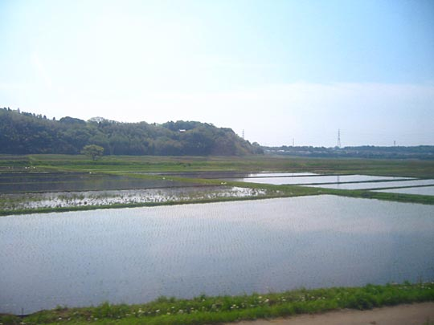
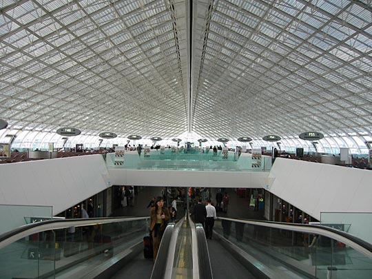
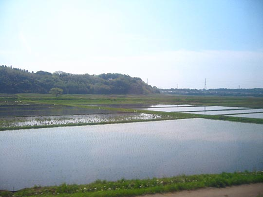
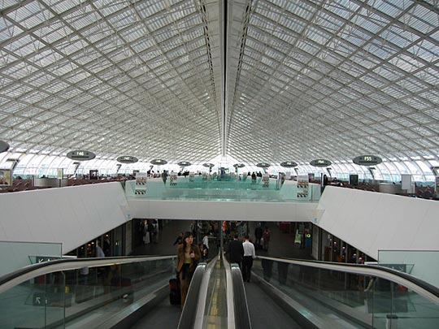

Rice paddies on the way to Narita Airport
 Monorail train on the way to Narita Airport
Monorail train on the way to Narita Airport
Beautiful architecture of Paris's Charles de Gaulle airport
Photos from our second trip to Japan, 18 March–2 April 2005 are on Flickr
From Kelly's diary:
Thank goodness for F. He managed to set the alarm last night for 5:30 giving us plenty of time to get our packing sorted. I passed out last night, seconds before my head hit the pillow. It was hard getting up, and it took ages sorting out all our loot and clothes and books and stuff. We were all packed up and out of the room just after 7am. The little old lady who works here was on the desk and she bid us farewell and thanked us for staying and gave us a warm smile and a deep bow. Put our shoes on for the last time and trundled out the door with all our luggage.
We decided to walk down Dogenzaki-dori for the last time towards Shibuya. Its a lovely sunny day, lots of crows about and OL and SM on their way to work. We take the shortcut through Mark City mall to Shibuya station, and battle our way through the crowds. The bag I'm pulling on wheels is still damn heavy as its full of the comics and book we bought. We're not sure where to get tix for the Narita Express, but we ask at the first JR information desk.
We are very lucky, we will just have time to get tix and onto the platform for the 8:09 train. I'm really relieved, because not all trains stop at Shibuya and I had nightmare visions of having to struggle across Shinjuku station. The train pulls up on time as is the norm and we trundle very gratefully onto the train, park our luggage and recline in the airplane style seats. There's a SM sitting opposite us, but we politely ignore each other. It's an uneventful 1 and half hour ride, but we do get to enjoy the scenic views from the train, as it was late at night and already dark when we traveled this way last time. Saw lots of rice paddies and farmers sloshing about.
At Narita we check in and go through security, into the terminal and look for a spot to have some breakfast/lunch. Its been a long morning already, and I'm really disappointed to discover all the cool restaurants I'd been reading about in the Narita Airport info book are actually on the top floor of the building on the other side of immigration control. Rats. So we end up eating in this horrible canteen style place, cold soba noodles and prawn tempura soba ramen. Not great, but we were hungry. There is alot of smoke hanging about too.
In the duty free shopping we got two packs of these hectic looking seafood rice crackers with whole dried squashed seafood in the crackers. One is for F's office and one for the chaps at Toms Deli where I buy lunch everyday. We also bought a box of Japanese style green tea sweets and a variety sweet box. Later F has a cup of coffee and minds the luggage while I try to use up a chunk of Yen that's left over. F is being really cranky about me spending any money, so its best if I do it alone. I got some boxes of green tea pocky, a kind of sweet pretzel that's 3/4 coated with a chocolate or creamy flavoured fondant. The airhostesses from Malaysia Air were buying loads of them, so I reckoned they must know something I don't. The Malaysia Air ladies were beautiful, immaculate hair and nails, so elegant and with fantastic wasp like waists. They were sandals on their feet and the uniforms are highly patterned, looked a bit like batik.
I also got some dried tuna chunks, like fish biltong, a bag of whole small dried/deep fried crabs in their shells with sesame seeds stuck to them. And a bottle of water for the flight.
Our flight left on time, we managed to get great seats being so early, the first row of seats in economy that give extra leg room. We were seated in the middle of the plane, and we had a seat open next to us. It was a long flight, watched Two Weeks Notice, a Hugh Grant and Sandra Bullock movie, also snatches of MacGyver, which was cringe-tastic and Frasier which was really funny. Also saw The Emperors Club, with Kevin Kline which was awful. Had to watch the films with English subtitles as all the movies were only available in dubbed French or Japanese. Meals weren't too hideous, but far from great and with an eternity between them. Most people slept on the plane, but we made a point of staying awake. I played quite a lot of solitaire on the games section of the console.
Landed at Paris slightly early, got to admire the incredible design of the terminal buildings. The wait to board the plane felt endless and we were really tired at this point. The flight to London was quick and painless, we landed shortly after 7pm. We made the fast time ever from exiting the airplane to walking through our front door in an hour and a half. We were home by 8:30pm. Incredible. Maniac taxi from Hammersmith to Ancill close, the guy drove like a bat out of hell. Opened the door to piles of post and familiar smells. Its so nice to home again. The gardens being putting in overtime, everything's grown inches since we left. It feels like we've been gone alot longer than 10 days. We only manage to unpack our loot before passing out on the bed. We slept like babes.
Rice paddies on the way to Narita Airport
Monorail train on the way to Narita Airport
Beautiful architecture of Paris's Charles de Gaulle airport